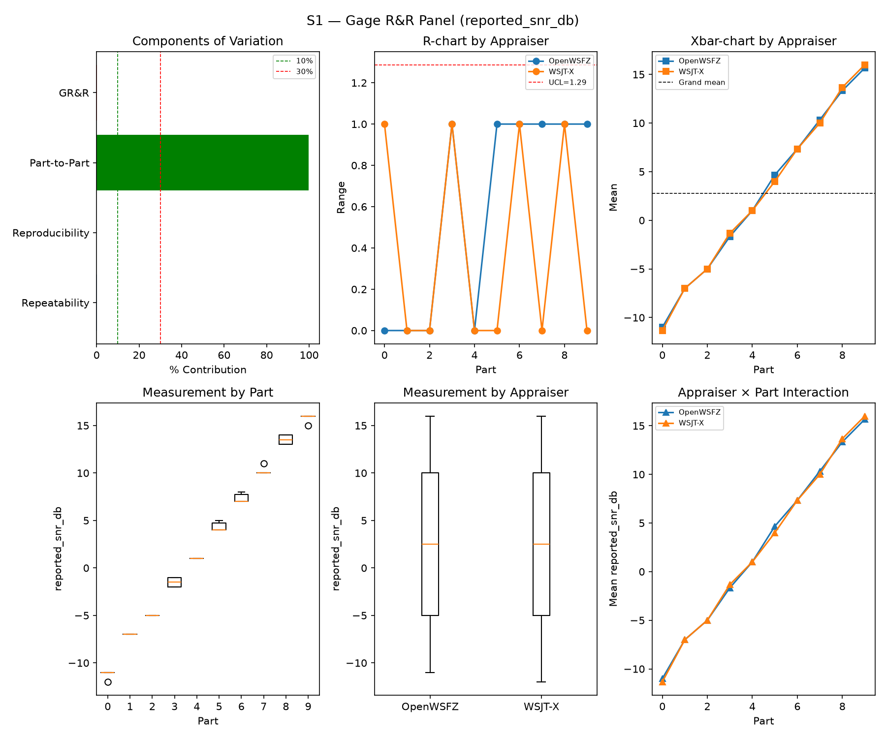
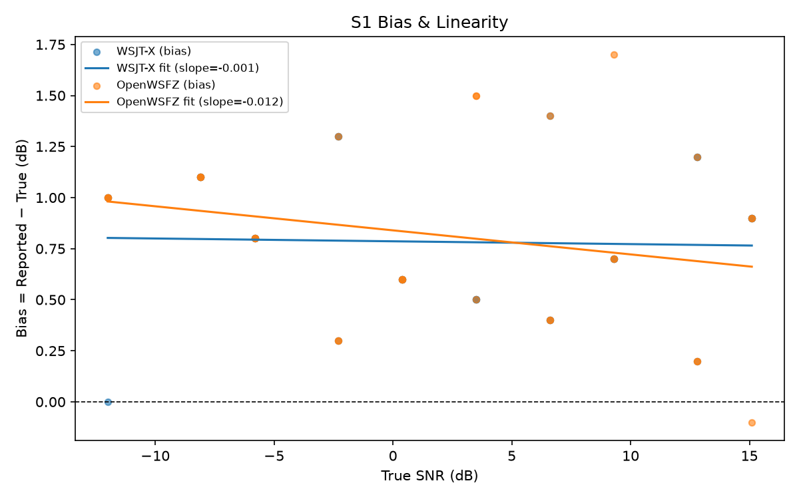
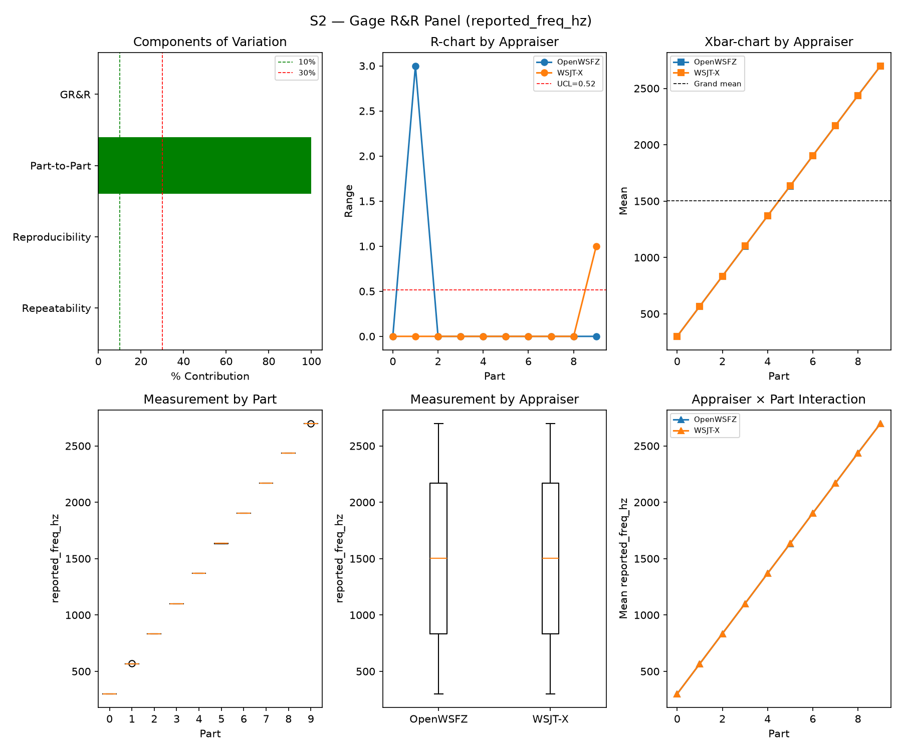
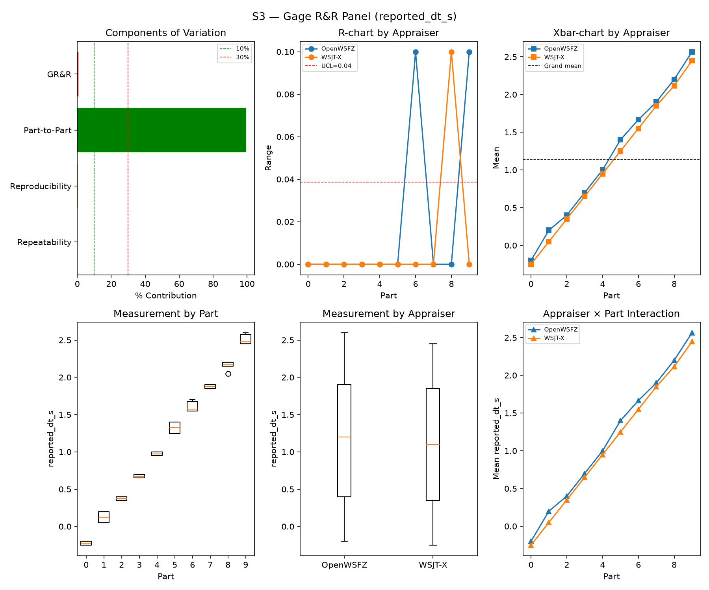
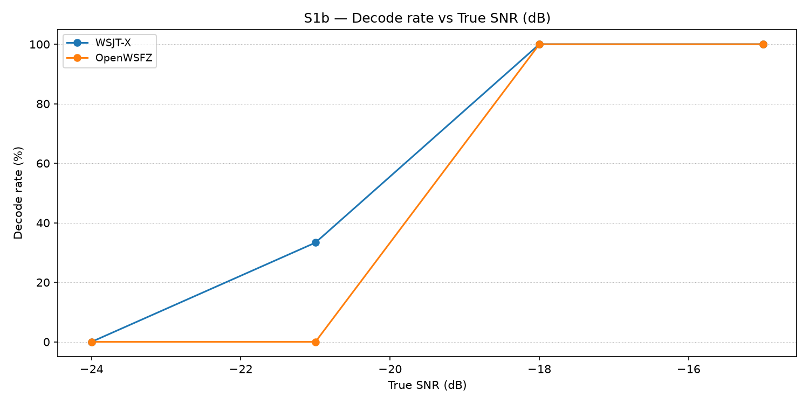
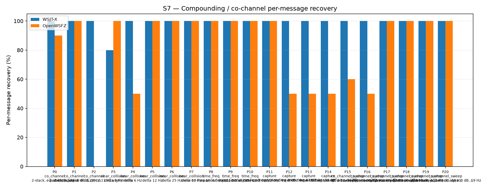
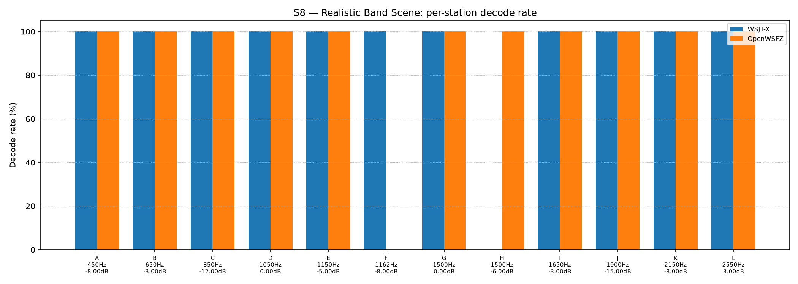

| Field | Value |
|---|---|
| Run date | 2026-09-07 |
| OpenWSFZ SHA | 4cc1984c8082ce1f07d7569d96ce74d6f504e1c6 |
| WSJT-X version | WSJT-X 2.7.0 (inferred from binary date 2025-02-04) |
Purpose of this run. Routine R&R battery (S1, S1b, S2, S3, S4, S5, S7, S8) against the
current local main-equivalent build (4cc1984, content-identical to origin/main's squashed
65d4fff from PR #144). No new defect ID was under investigation going in — this was a
housekeeping sweep against the latest binary, requested by the Captain.
What makes this run structurally different from every predecessor. This is the first live
S1–S8 battery to exercise the S5-GATE-SIZING Amendment 1 population (R&R-010, STUDY-SPEC.md
§16, implemented 2026-09-06, PR #144) — Gate A (AWGN, parts 0/1, N=120, ratified 6% UB
ceiling) and Check B (narrowband, parts 2/3, N=60, FAIL iff ≥2 events) scored as two separate,
never-pooled verdicts instead of one. The board had flagged this as open: "Next real S1–S8
sweep is the first to exercise Gate A/Check B live... Section 6 needs its footnote then." This
is that sweep.
Null hypotheses in scope. - H0(Gate A): OpenWSFZ's per-slot AWGN false-positive probability is ≤ 6% (95% UB, N=120). - H0(Check B): the narrowband-hallucination event count on 60 covered slots is < 2. - No hypothesis on S1/S2/S3/S4/S7/S8 was pre-registered for this run; those sections are reported for trend continuity only.
What would constitute a meaningful result. A Gate A FAIL is meaningful on its own terms — it is a ratified, mechanical gate, not a descriptive statistic — but whether it represents a new regression or a persisting one is a question for the historical series (Section 6), not this run in isolation (HK-031).
| Component | σ² | %Contribution |
|---|---|---|
| Repeatability | 0.17 | 0.20% |
| Reproducibility | 0.00 | 0.00% |
| Part-to-Part | 81.66 | 99.80% |
| Total GR&R | 0.17 | 0.20% |
| Total | 81.83 | 100.00% |
| Metric | Value | Verdict |
|---|---|---|
| %Contribution (GR&R) | 0.20% | PASS |
| %Tolerance (GR&R) | 24.49% | — |
| %Study Var (GR&R) | 4.51% | — |
| ndc | 31 | PASS |

| Appraiser | Mean Bias (dB) | Slope | Intercept | R² | Verdict |
|---|---|---|---|---|---|
| WSJT-X | +0.78 | -0.001 | 0.786 | 0.001 | PASS |
| OpenWSFZ | +0.82 | -0.012 | 0.840 | 0.056 | PASS |

| Component | σ² | %Contribution |
|---|---|---|
| Repeatability | 0.17 | 0.00% |
| Reproducibility | 0.36 | 0.00% |
| Part-to-Part | 652905.07 | 100.00% |
| Total GR&R | 0.53 | 0.00% |
| Total | 652905.61 | 100.00% |
| Metric | Value | Verdict |
|---|---|---|
| %Contribution (GR&R) | 0.00% | PASS |
| %Tolerance (GR&R) | 54.68% | — |
| %Study Var (GR&R) | 0.09% | — |
| ndc | 1562 | PASS |

| Component | σ² | %Contribution |
|---|---|---|
| Repeatability | 0.00 | 0.06% |
| Reproducibility | 0.00 | 0.53% |
| Part-to-Part | 0.82 | 99.41% |
| Total GR&R | 0.00 | 0.59% |
| Total | 0.83 | 100.00% |
| Metric | Value | Verdict |
|---|---|---|
| %Contribution (GR&R) | 0.59% | PASS |
| %Tolerance (GR&R) | 105.18% | — |
| %Study Var (GR&R) | 7.70% | — |
| ndc | 18 | PASS |

WSJT-X DT correction applied. A +0.55 s offset was added to WSJT-X
reported_dt_sbefore ANOVA to remove the ≈ −0.55 s convention difference between WSJT-X (DT relative to nominal FT8 TX start) and the harness (DT relative to UTC slot boundary). This correction removes the calibration artefact from SS_appraiser so %GR&R measures genuine app-to-app measurement disagreement. Raw reported values are preserved in the matched CSV. See scenariowsjt_dt_correction_sfield and R&R-003 (GitHub #1).
Decode rate (% of injected messages recovered) at SNRs excluded from the redesigned S1 ladder (−24 to −15 dB). Companion to S1; separates 'does it decode at this SNR?' from 'how accurately does it measure SNR?'. Informational — no AIAG threshold.
| Part | True SNR (dB) | WSJT-X decoded | WSJT-X rate | OpenWSFZ decoded | OpenWSFZ rate |
|---|---|---|---|---|---|
| P0 | -24.00 | 0/3 | 0.00% | 0/3 | 0.00% |
| P1 | -21.00 | 1/3 | 33.33% | 0/3 | 0.00% |
| P2 | -18.00 | 3/3 | 100.00% | 3/3 | 100.00% |
| P3 | -15.00 | 3/3 | 100.00% | 3/3 | 100.00% |
Overall decode rate — WSJT-X: 58.33% OpenWSFZ: 50.00%

κ is computed over a pooled population: S4 injected messages (truth = present) and S5 signal-free slots (truth = absent), so the truth vector has both classes. κ verdicts below are advisory — the §10 attribute gate is pending Captain ratification of this pooled method.
| Appraiser | TP | FN | FP | TN | Recovery | Specificity |
|---|---|---|---|---|---|---|
| WSJT-X | 62 | 46 | 0 | 180 | 57.41% | 100.00% |
| OpenWSFZ | 73 | 35 | 3 | 177 | 67.59% | 98.33% |
| Pair | κ | 95% CI | Verdict (advisory) |
|---|---|---|---|
| OpenWSFZ_vs_truth | 0.701 | [0.62, 0.79] | MARGINAL |
| WSJT-X_vs_truth | 0.628 | [0.53, 0.72] | FAIL |
| between_appraisers | 0.810 | — | MARGINAL |
| Appraiser | Consistent groups |
|---|---|
| WSJT-X | 75.00% |
| OpenWSFZ | 85.00% |
_S4 positives below the decodable-SNR floor are excluded (S5 negatives unchanged); shown alongside the full-population figures above per STUDY-SPEC.md §9.3's second ratification condition. Informational only — does not affect the §10 gate or the overall verdict.
| Appraiser | TP | FN | FP | TN | Recovery | Specificity |
|---|---|---|---|---|---|---|
| WSJT-X | 54 | 27 | 0 | 180 | 66.67% | 100.00% |
| OpenWSFZ | 66 | 15 | 3 | 177 | 81.48% | 98.33% |
| Pair | κ | 95% CI | Verdict (informational) |
|---|---|---|---|
| OpenWSFZ_vs_truth | 0.832 | [0.75, 0.90] | MARGINAL |
| WSJT-X_vs_truth | 0.734 | [0.65, 0.82] | MARGINAL |
| between_appraisers | 0.820 | — | MARGINAL |
| Appraiser | FP events / slots | Event rate | 95% UB | Decode rate | Verdict |
|---|---|---|---|---|---|
| WSJT-X | 0 / 120 | 0.00% | 2.47% | 0.00% | PASS |
| OpenWSFZ | 3 / 120 | 2.50% | 6.33% | 2.50% | FAIL |
Gate (STUDY-SPEC §10, ratified 2026-07-04, R&R-004; population re-affirmed S5-GATE-SIZING Amendment 1, 2026-09-06): the per-slot FP event rate on AWGN slots (parts 0/1) ONLY, gated on its one-sided 95% Clopper–Pearson upper bound (PASS iff 95% UB ≤ 6%). The UB is defined for all event counts (≈ 3 / N_slots at 0 events) and bounds the true per-slot FP probability at 95% confidence rather than the Poisson-noisy point estimate. Decode rate is reported for reference only. INFO means the gate is not evaluated at this N: below 49 slots, even zero observed events cannot clear the 6% ceiling, so no outcome at this sample size can produce a PASS or a meaningful FAIL — see a properly powered run (N ≥ 49) for the ratified §10 verdict. Never pooled with Check B below — see that table's own note.
| Appraiser | FP events / slots | Verdict |
|---|---|---|
| WSJT-X | 0 / 60 | PASS |
| OpenWSFZ | 0 / 60 | PASS |
Check (S5-GATE-SIZING Amendment 1, PO ruling Option 3, 2026-09-06 20:29 UTC): a coverage net for narrowband hallucination (steady carrier / birdies), scored on its OWN 60-slot denominator — FAIL iff events ≥ 2. Threshold derived in the spec's A1.2 from the measured all-history per-slot narrowband base rate (0.2347%, s5_narrowband_exposure_verify.py, ROW 0 cleared 2026-09-06), well under the ~1% re-derivation trigger. This is a raw event-count check, not a Clopper–Pearson UB gate, so there is no STATISTICAL small-N demotion analogous to MIN_N_FOR_FP_GATE — but INFO here means something distinct: zero narrowband slots were injected at all (Check B did not run this battery, e.g. a targeted --parts 0,1 recheck). That is a coverage gap, never a PASS — asserting PASS with no slots run would reproduce the exact blindness this design exists to remove. Never pooled with Gate A above into one S5 rate or one verdict line — the same 180 slots scored as one gate detect a regression 21% of the time; scored as two, Gate A alone detects it 77% of the time.
Per-message recovery when 2–3 signals occupy the same or near-same audio frequency / time slot (the pileup case S4 does not exercise). Informational — no AIAG threshold is defined for co-channel separation.
| Overlap family | WSJT-X | OpenWSFZ |
|---|---|---|
| capture | 100.00% | 62.50% |
| co_channel | 100.00% | 54.29% |
| co_channel_sweep | 100.00% | 85.00% |
| near_collision | 96.00% | 90.00% |
| time_freq | 100.00% | 100.00% |
| all | 99.07% | 79.07% |
| Signal | WSJT-X | OpenWSFZ |
|---|---|---|
| strong | 100.00% | 100.00% |
| weak | 100.00% | 25.00% |
Between-app per-signal agreement: 78.14%
| Part | Family | Condition | WSJT-X | OpenWSFZ |
|---|---|---|---|---|
| P0 | co_channel | 2-stack, equal 0 dB, Δ7 Hz | 10/10 | 9/10 |
| P1 | co_channel | 2-stack, equal -5 dB, Δ13 Hz | 10/10 | 10/10 |
| P2 | co_channel | 3-stack, equal 0 dB, Δ8 / Δ11 Hz asymmetric | 15/15 | 0/15 |
| P3 | near_collision | delta 3 Hz | 8/10 | 10/10 |
| P4 | near_collision | delta 6 Hz | 10/10 | 5/10 |
| P5 | near_collision | delta 12 Hz | 10/10 | 10/10 |
| P6 | near_collision | delta 25 Hz | 10/10 | 10/10 |
| P7 | near_collision | delta 50 Hz | 10/10 | 10/10 |
| P8 | time_freq | near-co-freq Δ8 Hz, dt 0.0 / 0.5 s | 10/10 | 10/10 |
| P9 | time_freq | near-co-freq Δ11 Hz, dt 0.0 / 1.0 s | 10/10 | 10/10 |
| P10 | time_freq | near-co-freq Δ9 Hz, dt 0.0 / 2.0 s | 10/10 | 10/10 |
| P11 | capture | near-co-freq Δ14 Hz, 0 / -3 dB | 10/10 | 10/10 |
| P12 | capture | near-co-freq Δ9 Hz, 0 / -6 dB | 10/10 | 5/10 |
| P13 | capture | near-co-freq Δ7 Hz, 0 / -10 dB | 10/10 | 5/10 |
| P14 | capture | near-co-freq Δ11 Hz, +3 / -10 dB | 10/10 | 5/10 |
| P15 | co_channel_sweep | offset-sweep: 2-stack, equal 0 dB, Δ5 Hz | 10/10 | 6/10 |
| P16 | co_channel_sweep | offset-sweep: 2-stack, equal 0 dB, Δ7 Hz | 10/10 | 5/10 |
| P17 | co_channel_sweep | offset-sweep: 2-stack, equal 0 dB, Δ10 Hz | 10/10 | 10/10 |
| P18 | co_channel_sweep | offset-sweep: 2-stack, equal 0 dB, Δ15 Hz | 10/10 | 10/10 |
| P19 | co_channel_sweep | offset-sweep: 2-stack, equal 0 dB, Δ8 Hz | 10/10 | 10/10 |
| P20 | co_channel_sweep | offset-sweep: 2-stack, equal 0 dB, Δ9 Hz | 10/10 | 10/10 |

Holistic decode-rate benchmark: 12 simultaneous stations across 450–2550 Hz at realistic SNR spread (−15 to +3 dB), including a near-collision pair (E/F, 12 Hz apart) and a capture pair (G/H, co-frequency, 6 dB ratio). Informational only — no PASS/FAIL gate.
| Appraiser | Decoded | Injected | Rate |
|---|---|---|---|
| WSJT-X | 55 | 60 | 91.67% |
| OpenWSFZ | 55 | 60 | 91.67% |
Between-appraiser delta (OpenWSFZ − WSJT-X): +0.0 pp
| Stn | Freq (Hz) | SNR (dB) | WSJT-X decoded/total | OpenWSFZ decoded/total |
|---|---|---|---|---|
| A | 450 | -8.00 | 5/5 | 5/5 |
| B | 650 | -3.00 | 5/5 | 5/5 |
| C | 850 | -12.00 | 5/5 | 5/5 |
| D | 1050 | 0.00 | 5/5 | 5/5 |
| E | 1150 | -5.00 | 5/5 | 5/5 |
| F | 1162 | -8.00 | 5/5 | 0/5 |
| G | 1500 | 0.00 | 5/5 | 5/5 |
| H | 1500 | -6.00 | 0/5 | 5/5 |
| I | 1650 | -3.00 | 5/5 | 5/5 |
| J | 1900 | -15.00 | 5/5 | 5/5 |
| K | 2150 | -8.00 | 5/5 | 5/5 |
| L | 2550 | 3.00 | 5/5 | 5/5 |

| Metric | Scope | Value | Verdict |
|---|---|---|---|
| %GR&R | S1 | 0.2% | PASS |
| ndc | S1 | 31 | PASS |
| %GR&R | S2 | 0.0% | PASS |
| ndc | S2 | 1562 | PASS |
| %GR&R | S3 | 0.6% | PASS |
| ndc | S3 | 18 | PASS |
| Kappa (advisory) | WSJT-X_vs_truth | 0.628 | FAIL |
| Kappa (advisory) | OpenWSFZ_vs_truth | 0.701 | MARGINAL |
| Kappa (advisory) | between_appraisers | 0.810 | MARGINAL |
| FP event rate (95% UB), Gate A | S5/WSJT-X | 0/120 slots (event 0.0%; 95% UB 2.47%; decode 0.0%) | PASS |
| FP event rate (95% UB), Gate A | S5/OpenWSFZ | 3/120 slots (event 2.5%; 95% UB 6.33%; decode 2.5%) | FAIL |
| FP events, Check B (narrowband) | S5/WSJT-X | 0/60 slots (FAIL iff >= 2) | PASS |
| FP events, Check B (narrowband) | S5/OpenWSFZ | 0/60 slots (FAIL iff >= 2) | PASS |
| SNR bias | S1/WSJT-X | +0.78 dB | PASS |
| SNR bias | S1/OpenWSFZ | +0.82 dB | PASS |
Overall verdict: FAIL
Gate A FAIL — the only merge-relevant finding this run.
S5_matched.csv scoped to Gate A's own cycle_utc window
(2026-09-07T19:11:00Z–19:42:00Z) — not bleed-through from an adjacent scenario. All three fall
in part 1 (none in part 0). WSJT-X registered zero false positives across the same 120
slots, as it has in every routine sweep to date — the control stays clean, so this is not a
harness/routing artefact common to both appraisers.FP-PARITY/FP-REGRESSION threads — no new
mechanism is proposed here. This run's contribution is a properly-powered (N=120) data point
under the R&R-010 design, not a diagnosis.src/ change is proposed from this run alone.co_channel 3-stack)
repeat prior, already-tracked observations (NBR-A, FP-PARITY P4b, S7 stability threads) and
are not new findings of this run.Housekeeping note (not a defect): harness/matcher.py attributes any unmatched decode
anywhere in the session's ALL.TXT to every scenario's own false-positive count (confirmed
directly — the S8-scenario warm-up decode and all 26 session-wide hallucinated tokens appear
identically in all eight S*_matched.csv files' raw FP lists). harness/analyse.py's Gate
A/Check B computation correctly re-scopes by cycle_utc membership against each part's own
truth rows (this is the same fix R&R-010 already made for the part-index NaN defect), so the
reported gate verdicts are unaffected — this note is for whoever next reads a raw
*_matched.csv "FP" count directly and wonders why every scenario's count is inflated by the
same session-wide total.
S1/S2/S3 (GR&R, informational): consistent with the full run history in trend.csv —
%GR&R and ndc remain comfortably PASS-range across every dated entry since the 2026-07-04 S1
redesign; no trend concern.
S5 Gate A / Check B — the COMPLETE series. A prior draft of this section showed only seven
selected rows starting 2026-08-27, chosen by my own judgment and not disclosed as a selection.
That was wrong and has been corrected — every row in trend.csv's fp_rate_s5 column is below,
in date order, none omitted, plus two runs (872ba65, 4c7d5ad) that never got a trend.csv
row at all but do have their own report. Read this against R&R-010's own instruction
(STUDY-SPEC.md §16): "the S5 FP column now spans three denominator classes... normalise any
cross-era rate comparison per AWGN slot first — never read the column directly across a
denominator change." Wherever a source report.md exists I re-verified its own gate line
directly (never inferred from date or from trend.csv alone) rather than trust the column;
where it doesn't, the trend.csv figure is shown as-is and flagged.
| Date | SHA | trend.csv value |
Verified from source report | Note |
|---|---|---|---|---|
| 2026-06-06 (×5) | 46d7f6a,5b868ce,aa053a9,4c34ef6,6bab388 |
0.0 | — | Pre-ratification (before R&R-004, 2026-07-04). Not independently re-checked this pass. |
| 2026-06-07 (×2) | 497996f,15b220b |
0.0 | — | Pre-ratification. Not re-checked. |
| 2026-06-14 | 815b652 |
0.0 | — | Pre-ratification. Not re-checked. |
| 2026-06-20 | 6e821fa |
91.67 | — | Pre-ratification. Metric is a different definition here — the era's own report (d40b4cd, same day) defines "a slot with two FP decodes counts as two events," so this is a raw multi-event-per-slot rate, not the Clopper–Pearson single-slot UB used from 2026-07-04 onward. Values >100% are possible under this definition and are not directly comparable to anything below. |
| 2026-06-20 | d40b4cd |
133.33 | "≥9 FP events across ≥6 of 12 slots, minimum 75% event rate" (prose, not a gate table) | Same pre-ratification metric as above; this was the D-009 OSD false-positive investigation, not a routine S5 gate reading. |
| 2026-06-20 | 8eea3c4 |
75.0 | — | Same era/metric as above. Not independently re-checked this pass. |
| 2026-06-22 | f11f438 |
0.0 | — | Pre-ratification. Not re-checked. |
| — (d011-fp-recheck) | f1e76d4 |
5.83 | report's own line: 7/120 slots (event 5.8%, 95% UB 10.68%) FAIL | 🔴 trend.csv stores the raw event rate (5.83%) here, not the UB (10.68%) — inconsistent with every other row in this column, which stores the UB. Flagged, not silently corrected. |
| 2026-07-04 | a3738fc (F002, S5 N=300, targeted) |
4.76 | 8/300 (event 2.7%, 95% UB 4.76%) PASS | First N≥49 (properly powered) reading, purpose-built to resolve the ratified gate. Matches. |
| 2026-07-04 | 793a298 (routine battery, pre-R&R-006 trial count) |
22.09 | 0/12 slots, 95% UB 22.09%, NOT GATED (N=12 is below the 49-slot minimum — no PASS or FAIL is possible at this N) | Matches trend.csv exactly. This is the largest number in the whole series and it is an ungated INFO line, not a FAIL — flagging this precisely so it isn't misread either direction. |
| 2026-07-07 | df4cc89 |
2.47 | 0/120 (95% UB 2.47%) PASS | Matches. |
| 2026-08-05 | 3bd4cd0 |
2.47 | 0/120 (95% UB 2.47%) PASS | Matches. |
| 2026-08-15 | 8d6e1b1 |
3.89 | 1/120 (event 0.8%, 95% UB 3.89%) PASS | Matches. |
| 2026-08-21 | 7d36038 |
3.89 | 1/120 (event 0.8%, 95% UB 3.89%) PASS | Matches. |
| 2026-08-22 | f5dec23 |
7.47 | 4/120 (event 3.3%, 95% UB 7.47%) FAIL | Matches. |
| 2026-08-27 | 22b749c |
4.87 | 0/60 (95% UB 4.87%) PASS | R&R-009 era begins (N=60, 2-part). Matches. |
— (not in trend.csv) |
872ba65 |
(no row) | 1/60 (event 1.7%, 95% UB 7.66%) FAIL | 2026-08-29. This run's trend.csv append apparently didn't happen; figure taken directly from its own report.md. |
| 2026-08-30 | 2e60949 |
5.15 | 2/120 (event 1.7%, 95% UB 5.15%) PASS | Targeted N=120 run, not the restricted default battery. Matches. |
| 2026-09-02 | 3b52608 |
14.61 | 4/60 (event 6.7%, 95% UB 14.61%) FAIL | Matches. |
| 2026-09-03 | 35378b9 |
10.12 | 2/60 (event 3.3%, 95% UB 10.12%) FAIL | Matches. |
| 2026-09-05 | df13da0 |
3.91 | not resolved this pass | 🔴 Provenance unclear. trend.csv's own value (3.91%) does not match the MEMORY-ratified, citable S5-STANDALONE figure for this date (k=6/300=2.000%, 95% CI upper 4.30%, vs July k=8/300=2.667%, p=0.79 — a specially-designed N=300 harness, not the routine battery). The two may be different measurements entirely; I have not traced what produced 3.91% specifically. Do not cite 3.91% for anything until traced — cite the ratified S5-STANDALONE figure instead. |
— (not in trend.csv) |
4c7d5ad |
(no row) | 3/60 (targeted run, no full report.md — R&R-010's own trigger) |
2026-09-06. |
| 2026-09-07 (TODAY) | 4cc1984 |
6.33 | 3/120 (event 2.5%, 95% UB 6.33%) FAIL | First live Gate A under R&R-010's N=120 design. |
Reading this, not just today's row: restricting to properly-gated, comparable observations
(N≥49, routine or targeted AWGN-only readings — excluding the pre-ratification block and the
ungated 793a298 INFO line), there are 13 such readings from the gate's 2026-07-04
ratification to today, of which 6 FAIL: f5dec23 (08-22), 872ba65 (08-29), 3b52608
(09-02), 35378b9 (09-03), 4c7d5ad (09-06), and today's 4cc1984. The longest PASS streak
in the record is 4 in a row (df4cc89 through 7d36038, 07-07 to 08-21). The longest FAIL
streak in the record is also 4 in a row — and it is the most recent four (3b52608, 35378b9,
4c7d5ad, and today). Today's reading extends that run rather than being an isolated event. It
is not a new spike by raw count (3 events, unchanged from 2026-09-06); per-AWGN-slot the point
rate is lower than at some points that PASSed (e.g. 2.5% today vs. 2e60949's 1.7% — note that
one PASSed at N=120 while today FAILs at N=120 too, so N alone doesn't explain the difference
either; small-count Clopper–Pearson UBs are simply not linear in the point rate). This is
descriptive, not a ruling: whether the underlying AWGN FP rate is elevated, stable-but-gate-
sensitive at this N, or noise is exactly the question R&R-010 was built to answer with a
properly-powered series, and today is only that series' first point under the new design.
WSJT-X has registered zero Gate A false positives in every properly-gated observation above, with
no exception.
S7 (informational, no gate): OpenWSFZ recovery this run (79.07%) sits within the range
already established by the S7 instrument-suspect jump investigation (BOARD.md,
2026-08-31 3-run verdict) — P2 (co_channel, 3-stack) remains 0/15, consistent with every
prior sweep; not a new finding.